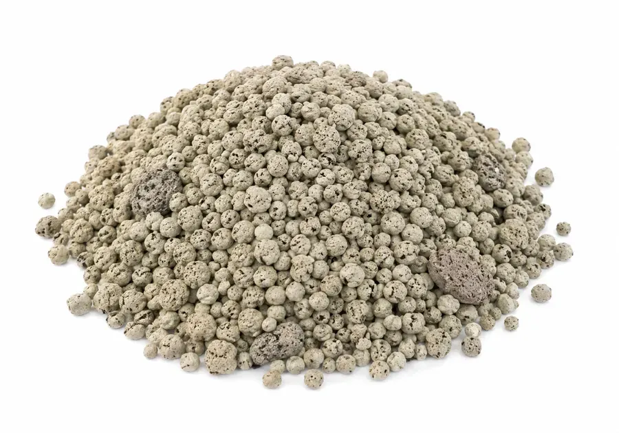
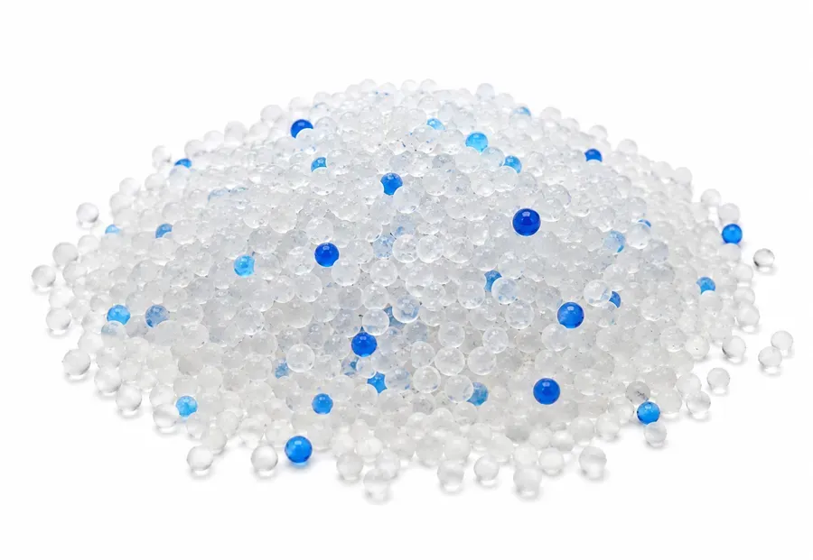

Kuweta
Właściwy wybór kuwety i żwirku ma bezpośredni wpływ na to, czy kot będzie załatwiał się tam, gdzie trzeba.
1Wybór kuwety
Typ otwarty („klasyczny”) — zapewnia kotu maksymalny widok otoczenia, idealny dla kociąt i starszych zwierząt. Wybieraj kuwety z brzegiem o wysokości 15–20 cm, o długości równej 1,5–2 długości kota.
Box zamknięty („prywatność”) — maskuje zapachy i żwirek, zapobiega rozrzucaniu żwirku. Niektóre koty mogą czuć się w nim jak w pułapce — na początku zdejmij drzwiczki.
2Gdzie postawić kuwetę?
Ciche miejsce — z dala od hałasu urządzeń domowych i ruchliwych korytarzy.
Z dala od jedzenia — koty nie lubią załatwiać się tam, gdzie jedzą lub piją.
3Rodzaje żwirku
Mineralny (żwirek bentonitowy, zbrylający się) — świetnie neutralizuje zapach, tworzy zwarte grudki, ale pyli podczas nasypywania.

Drzewny (prasowane trociny, wchłaniający) — budżetowy, po zamoczeniu rozpada się w drobny pył, można go spłukiwać w toalecie w małych porcjach, ekologiczny.
Silikażelowy (wchłaniający) — maksymalna chłonność i neutralizacja zapachu, ale głośno chrzęści i może odstraszać płochliwe koty.

Żwirki roślinne (sojowe, kukurydziane, zbożowe) — świetnie nadają się do spłukiwania w toalecie, rozpuszczają się bez pozostałości, są bezpieczne w razie przypadkowego zjedzenia, ale są droższe i mogą przyciągać gryzonie, jeśli są przechowywane np. na działce.
4Złota zasada kuwet: N + 1
Wskazówka
Liczba kuwet powinna być o jeden większa niż liczba kotów w domu. To zapobiega stresowi i konfliktom o terytorium.
5Pielęgnacja i higiena
Codziennie: usuwanie grudek i stałych odchodów 1–2 razy dziennie.
Raz na 2 tygodnie/miesiąc: całkowita wymiana żwirku i umycie kuwety łagodnym środkiem.
Materiał ma znaczenie: plastik jest tańszy, ale z czasem wchłania zapachy, a odpryski i zarysowania stają się siedliskiem bakterii. Ceramika lub metal dezynfekuje się higieniczniej, ale kosztują więcej.
6Ukryte zagrożenia
Odświeżacze zapachu: zapach lawendy jest przyjemny dla Ciebie, ale odstrasza kota z jego wrażliwym nosem.
Głośne lokalizacje: kuweta obok pralki to prosta droga do nagłego przestrachu i porzucenia tego miejsca.
7Jeśli kot ignoruje kuwetę
Medycyna: najpierw wyklucz u weterynarza zapalenie pęcherza lub kamicę moczową.
Zachowanie: sprawdź czystość, zmień rodzaj żwirku lub miejsce ustawienia kuwety.
Koty mogą ignorować kuwetę z powodu stresu, nieodpowiedniego żwirku, silnego zapachu lub niepokojących dźwięków przy kontakcie z ziarnami żwirku.
Więcej w tym dziale
Informacje w aplikacji pochodzą z ogólnodostępnych źródeł i doświadczeń właścicieli kotów. Nie zastępują konsultacji ani badania u weterynarza. Decyzje dotyczące zdrowia i opieki nad zwierzęciem podejmuje jego właściciel – w razie wątpliwości skontaktuj się z weterynarzem.
Wszystko to jest w aplikacji Cat First
Artykuły, listy kontrolne i pierwsza pomoc w telefonie, nawet bez internetu.